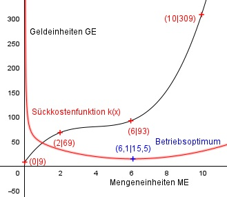
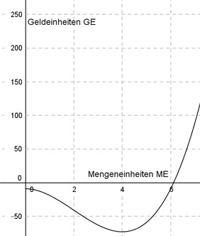
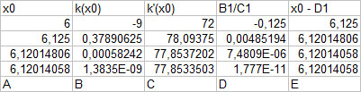

Aufgabe 148 Bei welcher Mengeneinheit liegt das Betrieb- soptimum, wenn Fixkosten von 9 GE vorliegen, bei 2 ME Kosten von 69 GE, bei 6 ME welche von 93 GE und bei 10 ME welche von 309 GE entstehen und der Betrieb mit einer ertrags- gesetzlichen Kostenfunktion arbeitet?  Allgemeine Form einer ertragsgesetzlichen Kostenfunktion 3. Grades: K(x) = ax3 + bx2 + cx + d K’(x) = 3ax2 + 2bx + c K’’(x) = 6ax + 2b 4 Bedingungen: 1. Wenn Fixkosten von 9 GE vorliegen bedeutet: K(0) = 9 --> a * 03 + b * 02 + c * 0 + d = 9 --> d = 9 2. Bei 2 ME Kosten von 69 GE bedeutet: (d = 9 eingesetzt) K(2) = 69 --> a * 23 + b * 22 + c * 2 + 9 = 69 --> 8a + 4b + 2c + 9 = 69 | -9 8a + 4b + 2c = 60 I 3. Bei 6 ME welche von 93 GE bedeutet: (d = 9 eingesetzt) K(6) = 93 --> a * 63 + b * 63 + c * 6 + 9 = 93 --> 216a + 36b + 6c + 9 = 93 | -9 216a + 36b + 6c = 84 II 4. Und bei 10 ME welche von 309 GE bedeutet: (d = 9 eingesetzt) K(10) = 309 --> a * 103 + b * 102 + c * 10 + 9 = 309 --> 1000a + 100b + 10c + 9 = 309 | -9 1000a + 100b + 10c = 300 III I * (-3) + II -24a - 12b - 6c = -180 216a + 36b + 6c = 84 ----------------------- 192a + 24b = -96 IV I * (-5) + III -40a - 20b - 10c = -300 1000a + 100b + 10c = 300 --------------------------- 960a + 80b = 0 V IV * 80 + V * (-24) 15360a + 1920b = -7680 -23040a - 1920b = 0 ------------------------ -7680a = -7680 |:(-7680) a = 1 a = 1 in V eingesetzt: 960 * 1 + 80b = 0 |-960 80b = -960 |:80 b = -12 a = 1 und b = -12 in I eingesetzt: 8 * 1 + 4 * (-12) + 2c = 60 8 - 48 + 2c = 60 -40 + 2c = 60 |+40 2c = 100 |:2 c = 50 Gesuchte Kostenfunktion: K(x) = x3 - 12x2 + 50x + 9 Das Betriebsoptimum ist das Minimum der Stückkostenfunktion k(x): d k’(x) = 2ax + b - ---- = 0 x2 9 k’(x) = 2x - 12 - ----- = 0 | *x2 x2 2x3 - 12x2 - 9 = 0  Ermittlung der Nullstelle zwischen 6 und 7 mit dem Newtonverfahren und Excel: k(x0) x1 = x0 - ------- k’(x0)  Der letzte Wert in der Spalte E ist der gesuchte. Mit ausreichender Genauigkeit x0 = 6,12 ME = 6,1 ME gerundet Betriebsoptimum. x3 - 12x2 + 26x + 9 k(x) = ----------------------- = x = x2 - 12x + 26 + 9/x 9 k’’(x) = 2 + 2 * ---- x3 9 k’’(6,12) = 2 + 2 * ------- > 0 --> Minimum 6,123 k(6,12) = 6,122 - 12 * 6,12 + 50 + 9/6,12 = k(6,12) = 37,45 - 73,44 + 50 + 1,47 = = 15,5 GE gerundet Koordinaten des Betriebsoptimums (6,1|15,5)